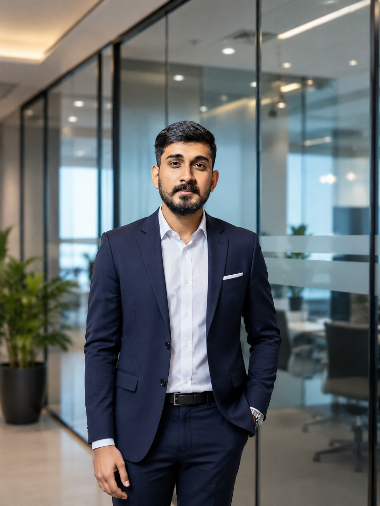

M.Sc. Data Science graduate from the University of Kalyani, building end-to-end ML and LLM systems — from biosignal-based diagnosis models to RAG-powered assistants and full data pipelines.

I'm a Data Science postgraduate with hands-on experience across the full ML lifecycle — data collection and cleaning, feature engineering, model training and evaluation, and deployment via REST APIs. My core toolkit is Python, R, and SQL, with deep learning frameworks like TensorFlow and PyTorch for production-oriented solutions.
I've worked on diagnostic ML (breast cancer, bone fracture, and heart disease detection from biosignals), financial time-series forecasting, and most recently, LLM-based applications using LangChain, RAG pipelines, and vector databases. I also bring practical data annotation and data quality experience from my internship at Intelgic Technologies.
Currently exploring agentic AI systems and voice-enabled interfaces, while continuing to sharpen my data engineering skills with PySpark and cloud platforms.
A mobile-first fitness tracking app for logging meals, activities, and goals. Features AI-powered food recognition for calorie tracking and a multi-step onboarding flow with dynamic BMR-based calculations.
Automated web scrapers extracting real-time Indian stock market data, followed by statistical analysis and LSTM-based forecasting to identify trends. Raw financial data cleaned and transformed into structured datasets with visual insights for decision-making.
A multi-agent LLM system for automated cybersecurity threat detection, featuring a voice-enabled alert pipeline with Text-to-Speech responses, severity evaluation, and automated response generation for real-time security monitoring.
A full-stack music player with Django authentication, dynamic media streaming, and playlist management. Includes a custom utility for parsing LRC lyric files and a structured data pipeline feeding an analytics dashboard for user/track metadata.
An end-to-end conversational AI app powered by OpenAI's GPT-3.5-turbo, with a Retrieval-Augmented Generation pipeline using FAISS for vector search. Achieved 90% user satisfaction in testing through optimized prompt design and context-aware chains.
A production-oriented AI solution for cardiovascular disease detection, processing PPG biosignal data to extract HRV and pulse-rate features. Trained ML/DL models achieving 91% test accuracy, with REST API endpoints built for real-time prediction.
I'm open to opportunities in data science, machine learning, and AI engineering. Reach out — I usually reply within a day.